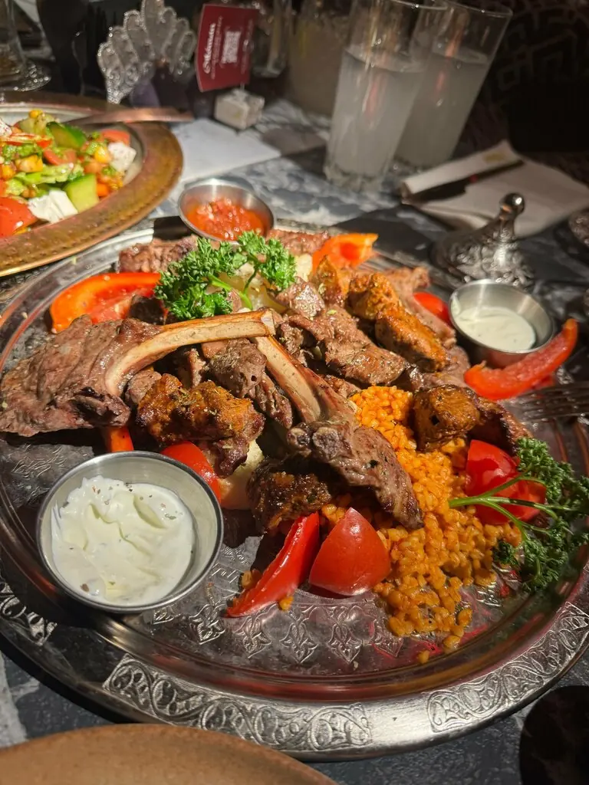
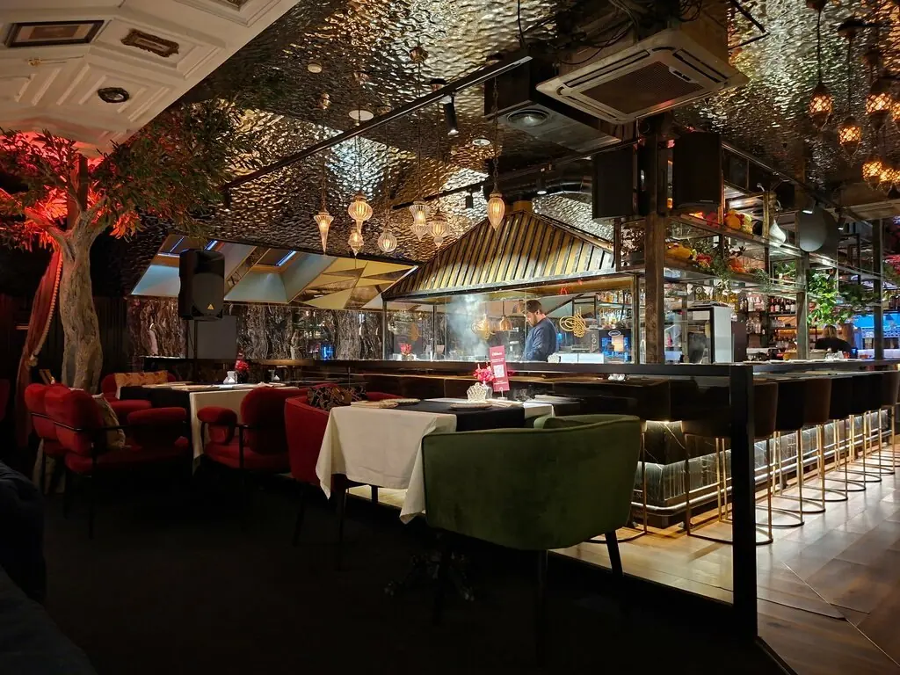
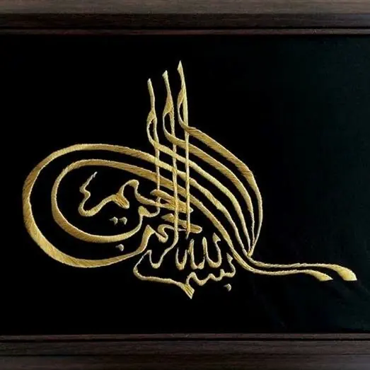
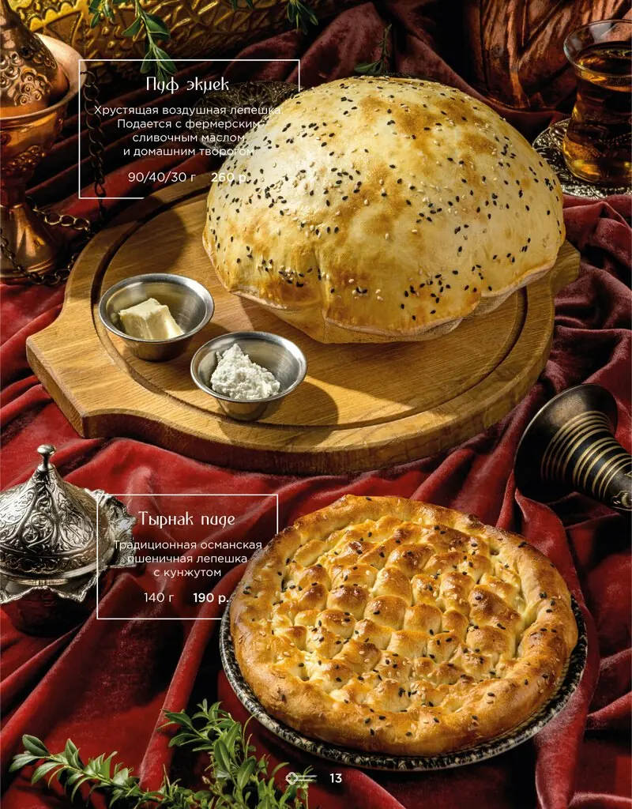
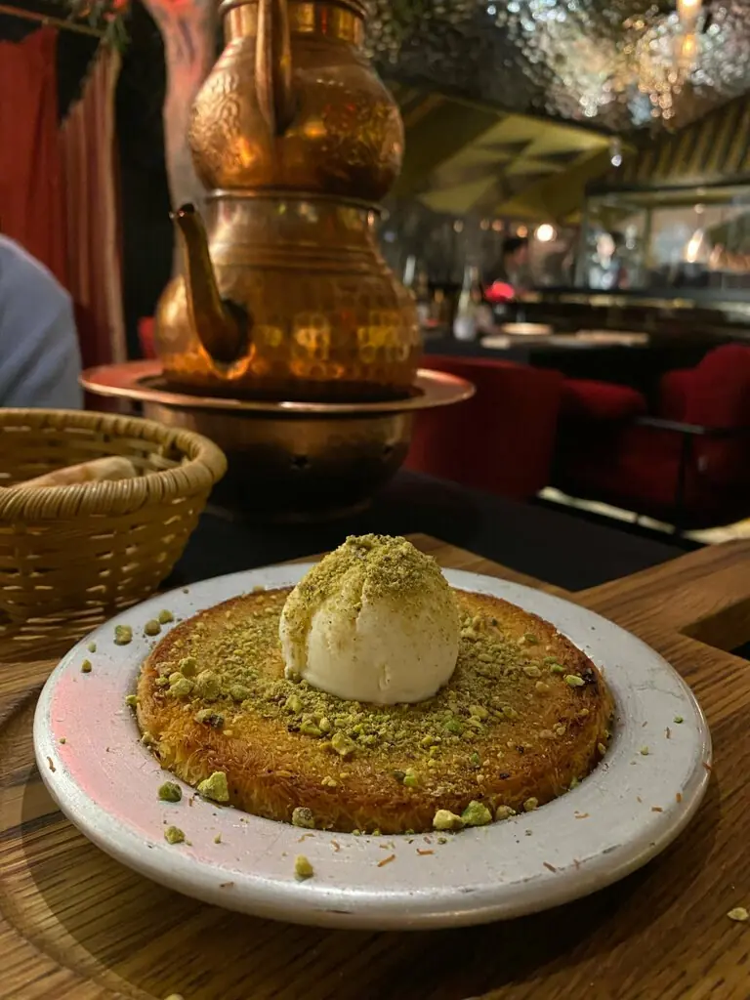
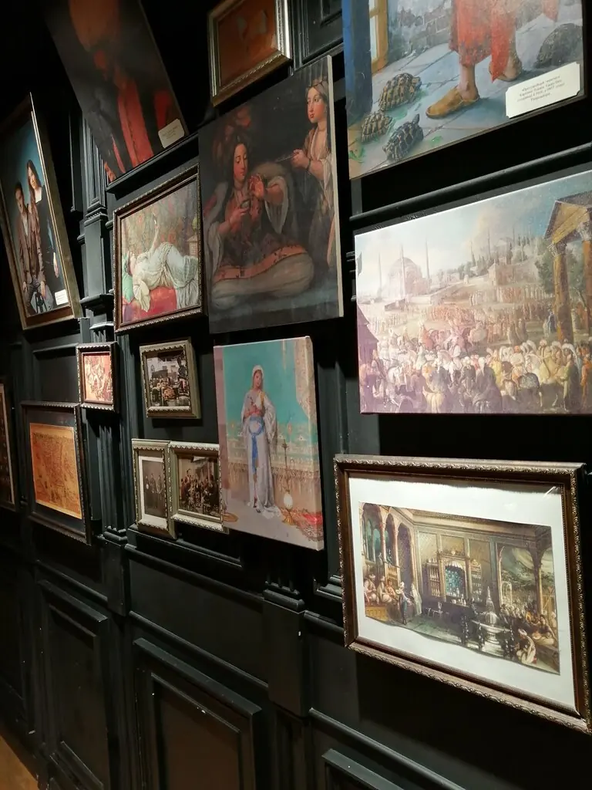

OTTOMAN
Ужин в покоях султана: кебаб, кюнефе, турецкий чай и зал, где каждая деталь рассказывает историю.
4,8 · 3071 оценка
Султанский стол

Из печи
тырнак пиде 190 ₽
Фисташковое кюнюфе
790 ₽Ассорти мезе590 ₽
Адана кебаб890 ₽
Грибы по-османски390 ₽
Оттоман сарма890 ₽
Чечевичный суп390 ₽
Кекикли тавук590 ₽
Рулетики из баклажан390 ₽
Сердце Султана, десерт590 ₽
Часть меню с Яндекс Карт, цены уточняйте у официанта.

Дворец с картинами и кафтанами
Кирпичный особняк снаружи, а внутри красные деревья, старинные рамы, кафтаны и резной потолок. 90 мест, поэтому вечером в пятницу лучше забронировать заранее. По пятницам и субботам открыто до двух ночи.
Говорят гости
Атмосфера очень крутая. Еда шикарна, весь персонал просто на высшем уровне.Влад Г
Классная атмосфера, обслуживание на высшем уровне.Элеонора Кънева
Всё понравилось: и кухня, и атмосфера. Отлично отдохнули.Яковлева Марина
Покои ждут
Уфа, улица Чернышевского, 69Пн–ср и вс 12:00–00:00, чт 12:00–01:00, пт–сб 12:00–02:00+7 905 351-07-69